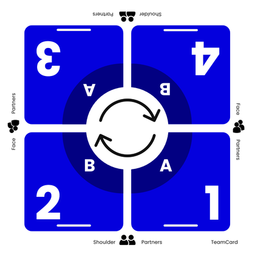
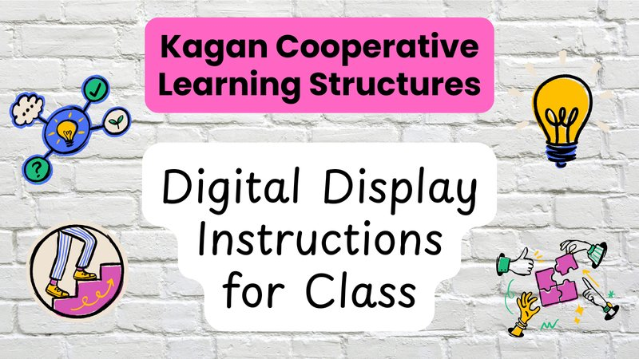
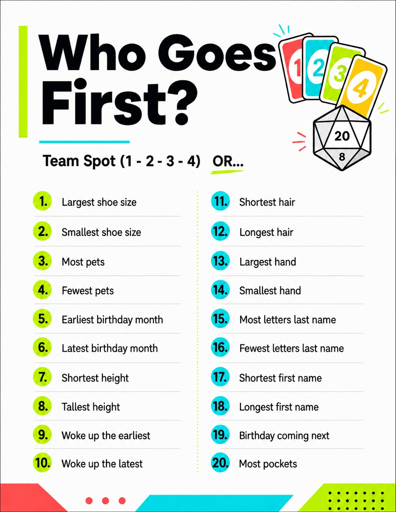

Cooperative Learning
Overview & PIES Principle
Cooperative learning is a structured instructional strategy where small teams of students work together toward a shared academic goal.
Unlike traditional "group work" – where three students watch one overachiever do all the heavy lifting – cooperative learning is intentionally engineered so that individual success depends on group success, and vice versa. It prioritizes participation and engagement above task completion.
For secondary educators (grades 6–12), cooperative learning leverages teenagers' natural drive for social connection and redirects it toward academic engagement, critical thinking, and skill-building.
Kagan Cooperative Learning is a structural approach to cooperative learning developed by Dr. Spencer Kagan that integrates peer interaction directly into instruction through repeatable, step-by-step instructional tools called Kagan Structures.
Kagan focuses on content-free structures that secondary teachers can drop into any lesson plan in seconds – whether teaching 6th-grade Math, 9th-grade Science, or 12th-grade English.
A Kagan classroom is an active learning experience using a structured way of processing information that ensures every student participates and thinks deeply. Visit kaganonline.com for more information.
The Core Framework: Kagan's PIES Principles
Positive Interdependence: Are students on the same side? Does one student's success help others succeed? The task requires cooperation; one student cannot complete it alone.
Individual Accountability: Must every student perform publicly in front of someone? No one can hide. Every team member must demonstrate their own learning without relying on a team spokesperson.
Equal Participation: Is participation equalized by time or turn? Kagan structures eliminate the classic secondary dynamic where one outspoken student hogs the airtime while others zone out.
Simultaneous Interaction: What percentage of students are overtly engaged at any given second? In a traditional classroom, only 1 out of 30 students speaks at a time (3% engagement). In a Kagan classroom, 50%–75% of the class is actively talking or writing at the exact same time.
Teams: Essential Kagan Teams & Seating

Kagan strongly advocates for heterogeneous teams of 4 (mixed ability*) to maximize interaction without management chaos. Other variations can include teams of 3, 5, and 6. Larger groups drastically reduce efficacy. *Ability can be based on any criteria such as academic skills, behavior, personality, work ethic, etc.
Team Seating Arrangement: Each team consists of one of each: High – High-Medium – Low-Medium – and Low performing student, numbered 1–4.
Partner Management (A/B):
Shoulder Partners: the person sitting directly next to the student.
Face Partners: the person sitting directly across from the student.
A table labeling system is critical. It can be a printed single manage mat or individual labels/stickers for each desk. Check out my TeamCard table mats you can print.
Works with a variety of seating layouts. Here are some common setups:
Structures: Popular & High Return Kagan Structures

These structures require zero extra lesson-planning time; just insert them into your lesson any time you want students to think, practice, or process content. Basically, any time you want to ask a whole group question and call on raised hands – that's a perfect time for a structure and share out.
Digital Display Instructions for Class
Project these step-by-step directions to ensure smooth operation when using a structure.
1. RoundRobin Family
Teacher poses a question or topic with multiple possible answers. Then, each person in the team takes a turn to respond verbally.
Variations:
- Single RoundRobin – each teammate takes a turn. Round is over after each person shares once.
- Continuous RoundRobin – each teammate takes a turn. Teams do multiple rounds until "Time's up!"
- Timed RoundRobin – each teammate responds for a duration of time.
Good for lengthy verbal responses.
2. Pair Share
Teacher poses a question or topic. Teacher picks who starts; the first partner shares the response. Then, the second partner shares.
Variations:
- Timed Pair Share – each partner responds for a duration of time.
- Think Write Share – each partner writes down an answer or response before sharing.
- Silent Pair Share – completely written (non-verbal) version of Pair Share.
Works best with short responses.
3. RoundTable Family
In teams, teammates take turns generating written responses, solving problems, or making a contribution to a project.
Variations:
- Single RoundTable – the team does just one round of RoundTable.
- Continuous RoundTable – the team does multiple rounds until the teacher calls "Time's up!"
- Timed RoundTable – each teammate contributes for a specific duration.
- RoundTable Consensus – following each performance, teammates reach consensus.
Options: after each turn, agree or modify/correct; after all turns, pick the best answer; fully agree on one answer to present for the team.
4. Quiz-Quiz-Trade
Classmates quiz a partner, get quizzed by the partner, then trade. Continually repeat with new partners.
5. Stand Up-Hand Up-Pair Up
Teacher asks the class to stand up, put their hand up in the air (this means you need a partner), and go pair up with someone from another team.
Good for a change of pace or energy boost.
Kagan Classroom Management Essentials
Timers! Use a visible timer for everything. For example, say: "You have 30 seconds to discuss with your partner, A's go first – on your mark, get set, go!" START THE TIMER. Find my timers here!
Attention Getter. Implement a consistent way to gather the attention of everyone in the room. Kagan uses "The Quiet Signal," a universal visual signal (a raised hand). When the teacher raises a hand, students immediately stop talking/stop doing, raise their hand, and look at the teacher. Within 3 seconds, a room of 30 students goes completely silent.
Teambuilding & Classbuilding. Kagan emphasizes spending time each week (5–10 mins) on non-academic bonding activities (e.g., "Would you rather...?") to build comfort and psychological/emotional safety so secondary students feel comfortable risking wrong answers in front of peers.

Follow Steps Consistently. The steps of a structure are carefully engineered. The exact, step-by-step procedures (using timers, sequence and order, participation roles, etc.) are what guarantee an effective and efficient framework, specifically Equal Participation and Individual Accountability.
When you skip or miss a step, the structure can fall apart or fall back into traditional group work.
Variety and Novelty. You'll want to use a structure multiple times until the operation is automatic, but be careful not to overly rely on a structure. If you start to see energy drop or some "going through the motions," it's time to change structures. Get really good at a handful of structures and rotate them out based on situation and need. Mixing and matching is the key!
Furthermore, Who Goes First? (1–4 or partner A/B) can get stale. Options:
- Get a set of Uno or playing cards for choosing 1–4. You randomly or blindly pick a card. Even better, let students pick a card.
- Spin Numbers in SELECTr PLUS to pick a seat at random.
- Check out this Who Goes First? One Pager and roll a d20 die or randomly pick one of your liking.
Common Challenges in Cooperative Learning (and How to Solve Them)
Not all students mesh seamlessly with cooperative learning. Personality clashes, fear of failure, off-task talking… teachers frequently encounter structural and social dynamics that can derail cooperative learning.
Here are some common operational and behavioral issues:
The "Hitchhiker" (Social Loafing)
One or two students actively or passively disengage, allowing highly motivated peers to carry the cognitive load and do the actual work.
Strategy: Implement individual accountability mechanisms. Use structures like "Numbered Heads Together" where you randomly call a number (1–4) to answer for the group, meaning the group must ensure everyone understands the material. Alternatively, require color-coded contributions (e.g., each student writes their portion in a specific ink color). Use proximity, positive reinforcement, and/or encouragement to participate in the process. If you run into a roadblock, sometimes that hitchhiker might need to be pulled – be aware, though, this could be a strategy to avoid working with others.
The "Dictator" (The Overbearing Achiever)
A high-achieving student takes over the entire process, refusing to delegate or listen to peer input because they care more about securing an "A" than the collaborative process.
Strategy: Reinforce following the cooperative learning structure steps and double-check the task for PIES. Model coaching and the value in being a team. Try starting with the number or partner so that the high-achieving student is forced to go last in order. The overachiever physically cannot complete the task without actively listening to their peers' assigned resources.
The "Reluctant One" (The Introverted or Anxious Student)
The student withdraws, freezes, or experiences high anxiety when forced into rapid, unstructured social interactions. They may understand the content perfectly but are too overwhelmed by group dynamics, sensory input, or fear of judgment to fight for airtime in a loud conversation.
Strategy: Implement a strict "Think Time" protocol before any group discussion begins. Require all students to write their answers down before sharing; this gives anxious students the chance to process and prepare a script without being put on the spot. Additionally, consider a "give to get" by pairing the student with a friend or someone they are comfortable with. You might also need to do more teambuilding to build the capacity of trust within the team; start with low-stakes activities, and avoid activities that require sharing of personal information or feelings.
Off-Task Socializing
Groups use the structured or unstructured time to catch up on personal issues or social gossip, usually because the teacher provided a vague goal without a strict time limit. Students can also have difficulty understanding norms of when to talk to their team vs. when NOT to.
- Strategy: Be explicit about when talking is allowed vs. not. Say, "We will go from social to non-social. If you just finished a structure, then know the next transition is non-social."
- Strategy: Use extreme, artificial time pressure for immediate deliverables. Give students "not enough time." Say, "You have exactly 1 minute to produce two written similarities on your whiteboard. Go." Add process accountability. Tell students and consistently call on random students for share-out. Set a norm that students DO NOT need to talk outside of their team.
- Consider: Your seating layout might be contributing to the issue. Sometimes pods or banquet style seating can invite extra off-task socializing. Cooperative learning can still be achieved, even in forward-facing rows, with a clear labeling system in place. See the Fixed Seating Teams image in the Teams section of this page.
Fake Collaboration (Divide and Conquer)
Students immediately divide a project into separate parts or shortcut the process, work in total isolation, and "staple it together" at the end, defeating the purpose of interaction.
Strategy: Talk to the group directly and remind them of the norms, the process, and the purpose of the cooperative task. Design tasks that require synthesis rather than accumulation. Try to read the group to see what might be the friction point. Is there a personality clash, tension, or something else? There's a deeper reason why the group is avoiding the collaboration.
The "Status" Hierarchy
Groups naturally defer to the student perceived as the "smartest" or most popular, treating their ideas as facts while dismissing contributions from students who typically struggle or are English Language Learners.
Strategy: Use a turn-timer or "Talking Token" system to enforce equity. Each student gets three tokens; they must spend a token to speak and cannot speak again once their tokens are gone until everyone's tokens are spent. Additionally, publicly validate a strong academic contribution from a typically low-status student to elevate their perceived competence.
The Speed Gap (Unequal Pacing)
One member lags behind while another zooms forward. Examine the task and how it aligns with PIES. Another speed issue: one group rushes through the assignment and becomes a behavioral distraction, while another group is still stuck on step one.
Strategy: Provide a scaffold to the struggling group. Sit in with them at the start of the activity to give them some guidance if they are slow starting. Build in relevant "sponge activities" (extension questions or peer-review protocols) that fast-finishers must complete while waiting.
Social Skills Deficits
Students lack the vocabulary or social mechanics to be patient, disagree politely, take turns, or build on another's idea, resulting in destructive arguing or awkward silence.
Strategy: Take time to train students in these skills and give concrete examples or scenarios. Adults have a hard time with this part; most certainly, young people will as well. Post explicit sentence stems on the board or their desks and require their use. Practice scripts like "I agree with [Name] and want to add..." or "I see it differently because..." Treat social skills as academic content that requires direct instruction and role-playing before the group work begins.
5 Tips for Student "Turn & Talk" Structures
- Use a timer! 60 seconds or less for most instances. Use one with an ending sound!
- Tell them who goes first!
- Verbally remind them when time is up. Say, "Back with me in 3, 2, 1… Thank you."
- Accountability. Tell them on the front end that they will have to share what was said after time is up.
- Positive reinforcement. Compliment those doing the right thing, making a good point, displaying good social skills, etc.
Prefer a Google Doc you can save and edit? Make a copy of the Google Doc.
Kagan, Kagan Structures and the structure names on this page belong to Kagan Publishing & Professional Development. RobsonEDU is not affiliated with Kagan. Learn more at kaganonline.com.